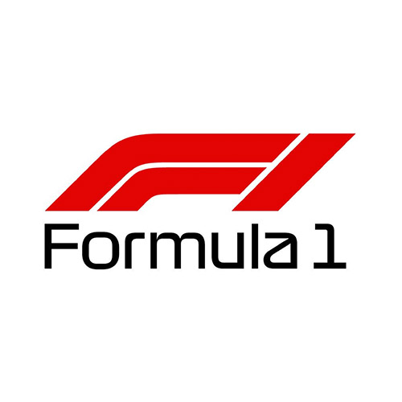
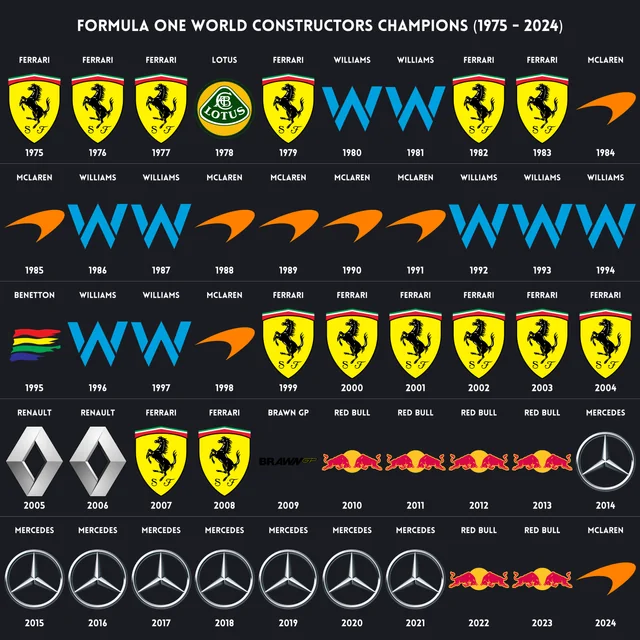
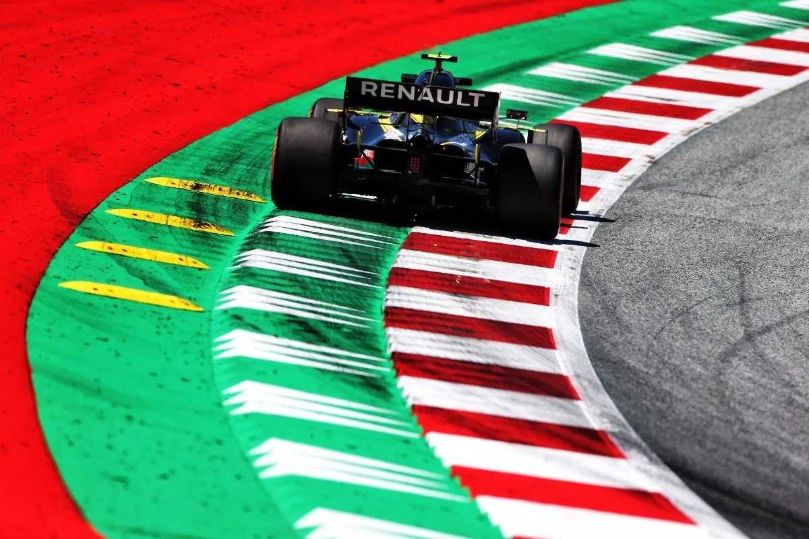
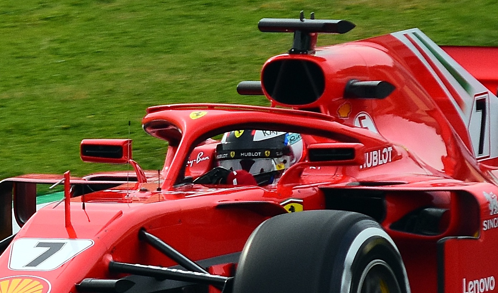
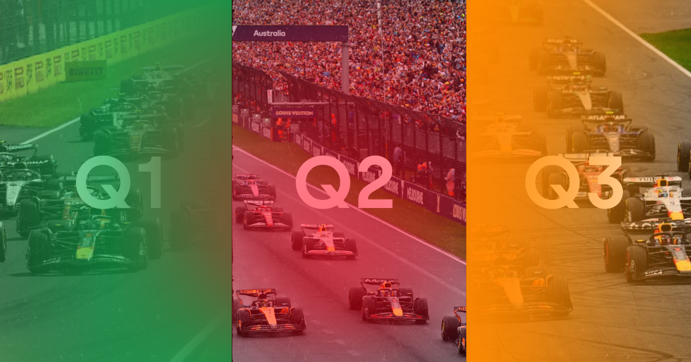
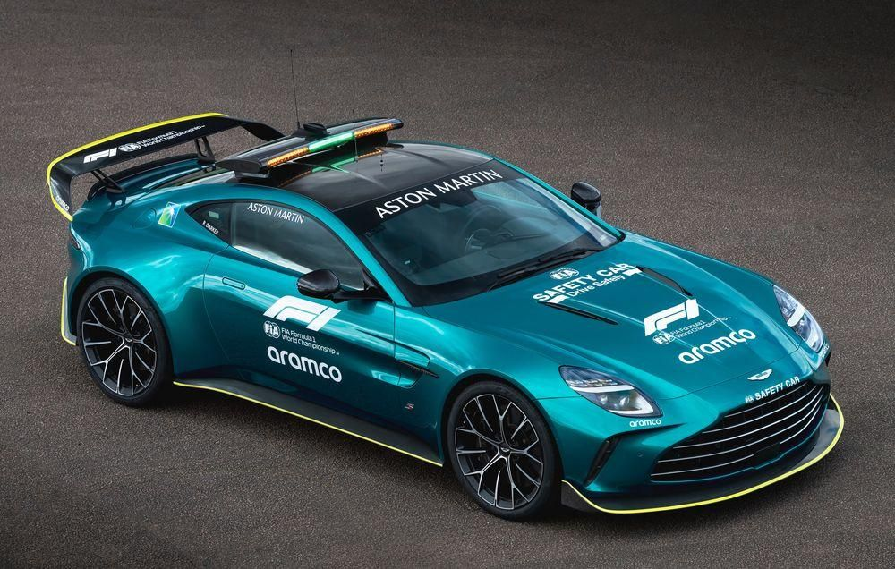
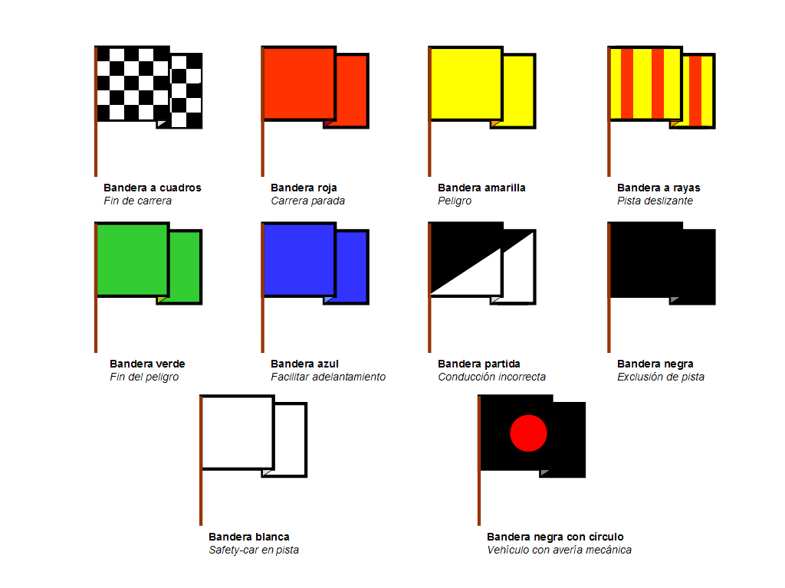

Todo lo que necesitas saber para entender la Fórmula 1

El nombre "Fórmula 1" proviene de las reglas técnicas —o "fórmulas"— que determinan cómo deben construirse los monoplazas. En 1947 se fundó la FIA (Federación Internacional del Automóvil), el organismo que regula y supervisa todas las competiciones automovilísticas del mundo. En 1950 se celebró el primer Campeonato Mundial de Fórmula 1, y se añadió el número "1" para distinguir a la categoría más alta del automovilismo. Así nació oficialmente la Fórmula 1 tal como la conocemos hoy.

Además de coronar al mejor piloto del mundo, el Mundial de Fórmula 1 también tiene otra competición igual de importante: el campeonato de constructores. Se trata de una clasificación de las escuderías que suman los puntos que firman sus pilotos a lo largo del año. Al final de la temporada, habrá un ganador. Esta competición existe desde 1958.

Los pianos son las franjas rojas y blancas que delimitan el trazado. Marcan el límite de la pista y los pilotos no pueden pasar completamente sobre ellos, ya que podrían recibir sanciones o dañar sus neumáticos. Son uno de los límites invisibles más importantes del circuito.

El halo es una estructura de titanio de unos 10 kilos que protege la cabeza del piloto ante impactos o vuelcos. Desde su introducción en 2018, ha salvado varias vidas y se considera uno de los mayores avances en seguridad en la historia de la F1.

La clasificación del sábado define la parrilla de salida y se divide en tres fases:
Q1: Participan todos los pilotos; los 5 más lentos quedan eliminados.
Q2: Compiten los 15 restantes; se eliminan otros 5.
Q3: Los 10 más rápidos luchan por la pole position, es decir, la primera posición en la salida del Gran Premio.

Safety Car: Cuando ocurre un accidente o hay peligro en pista, la FIA despliega el coche de seguridad. Los pilotos no pueden adelantar y deben mantener una velocidad reducida hasta que la pista esté despejada.
Virtual Safety Car: Se usa cuando no es necesario sacar físicamente el coche. Se muestran banderas amarillas en todo el circuito y los pilotos deben reducir la velocidad electrónicamente, sin adelantar.
